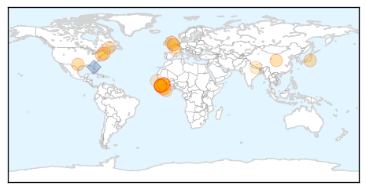
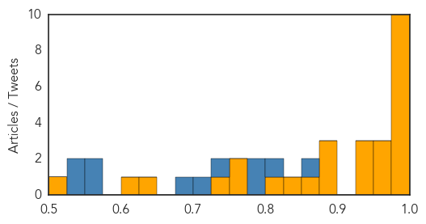
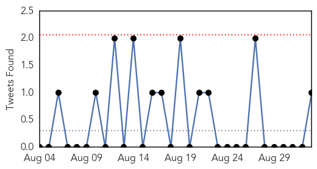
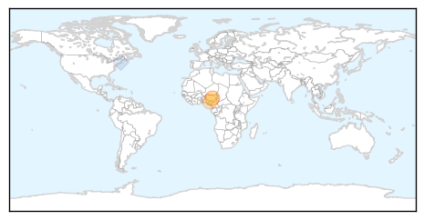
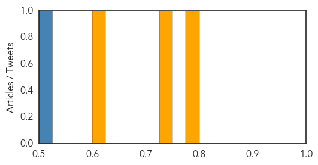

Ebola
30-Day Web Trend
0 alerts, 0 warnings

30-Day Twitter Trend
0 alerts, 0 warnings

Article Locations
Article Confidences
Top Articles:
- 1.000
- The most from the coast
- 1.000
- Few details offered on quarantines over Ebola, drawing criticism from nurse
- 1.000
- U.S. Ebola victims: Where are they now?
- 0.999
- Ebola quarantine in Sierra Leone stops countdown
- 0.999
- 50 People Quarantined After New Ebola Death in Northern Sierra Leone
- 0.999
- West Africa's weekly Ebola total stays at 3 cases
- 0.997
- 50 People Quarantined after New Ebola Death in S. Leone — Naharnet
- 0.997
- US Health Official Comments on Evolving Ebola Procedures
- 0.992
- Sierra Leone Quarantines 50 Following Latest Ebola Death
- 0.987
- World Bank Group Ebola Response Fact Sheet, Last Updated: Sep 01, 2015 - Sierra Leone
- 0.975
- Ban on chimp testing puts wild ape vaccine for Ebola at risk
- 0.966
- SIGNpost SIGNpost 00817
- 0.957
- Politico SL News Sierra Leone’s image and post-Ebola recovery
- 0.945
- S/Leone Ebola not over yet, official warns
- 0.944
- Sierra Leone: UNICEF Sierra Leone Ebola Situation Report, 26 August 2015
- 0.928
- Genetic differences may affect Ebola survival: study
- 0.897
- Liberia: Abe pledges to support Liberia's recovery from Ebola epidemic during meeting with President Johnson Sirleaf
- 0.883
- Sierra Leone Quarantines 50 Following Latest Ebola Death
- 0.878
- CDC caught wildly overestimating disease epidemic fatality numbers to boost vaccine sales
- 0.869
- Ebola-hit nurse joins hospital that saved his life
- 0.839
- Liberia’s Health Nightmare: Clock Ticking on Gov’t to Fix Mess
- 0.813
- Scientists Discover New Use For An Old Therapy Inhibiting Deadly Pathogens Including Ebola And Anthrax
- 0.774
- Sierra Leone Telegraph
- 0.760
- Liberia back home for Nations Cup qualifiers
- 0.733
- TopNews
- 0.636
- Senegal begins new Ebola vaccine trial on volunteers
- 0.607
- Oeil de la photographie Getty Images at Visa pour l’Image 2015
- 0.505
- Scrubs – The Leading Lifestyle Nursing Magazine Featuring Inspirational and Informational Nursing Articles
Top Tweets:
- 0.862
- Nebraska Medicine staff remembers Ebola patients - KMTV http://t.co/3qLrtObM1Q ebola EVD
- 0.809
- Sierra Leone Quarantines 50 Following Latest Ebola Death - Voice of America http://t.co/AEH33JNb5W ebola EVD
- 0.781
- Sierra Leone to vaccinate 200 people connected to Ebola victim - Reuters http://t.co/sUNPvhug8b ebola EVD
- 0.779
- Ebola vaccine study underway at Sanford Health in Fargo - Grand Forks Herald http://t.co/m2Qh7nB8tc ebola EVD
- 0.733
- RT: Ebola virus survives in wastewater longer than was thought US scientists report. But is that a source of spread? http…
- 0.711
- Ebola vaccine study underway in Fargo - INFORUM http://t.co/0OtM8gS3qO ebola EVD
- 0.681
- SocialVulnerability and Ebola Virus Disease in Rural Liberia http://t.co/TwsKHKXeNd
- 0.575
- The Ebola Outbreak in Comparison: Liberia and CôtedIvoire http://t.co/JERZMaWrSE
- 0.566
- US Ebola survivors: Where are they now? - CNN http://t.co/3jrJEgj2en ebola EVD
- 0.546
- RT: West Africa's weekly Ebola total stays at 3 cases http://t.co/E5RhWMMWoY
- 0.535
- New antivirals viable PEP option in HCWs exposed to Ebola - Healio http://t.co/LiLQJO7HOd ebola EVD
Cholera
30-Day Web Trend
1 alerts, 0 warnings
30-Day Twitter Trend
0 alerts, 0 warnings

Article Locations
Article Confidences
Top Articles:
Top Tweets:
- 0.523
- RT: Kudos on Haiti! Pls urge UN accountability to cholera victims like 154 Hn-Am leaders/77USreps ht…